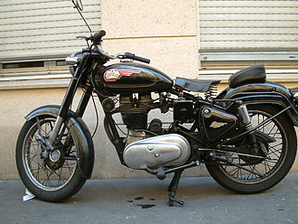

ABOUT ROYAL ENFIELD

CEO: B. Govindarajan (18 Aug 2021–)
Parent organization: Eicher Motors
Customer service: 1800 210 0007
Founded: 1955
Headquarters: Chennai
Subsidiaries: Royal Enfield North America; Royal Enfield UK; Royal Enfield Brazil; Royal Enfield Thailand
Royal Enfield
Type: Public
Industry: Automotive
Predecessor: Royal Enfield (1901-1971)
Founded :1955; 68 years ago (as Enfield Motors)
1901; 122 years ago (as The Enfield Cycle Company Limited)
Headquarters: Gurgaon, Haryana, India[1]
Areas served: Worldwide
Key people: B Govindarajan (CEO)
Products: Motorcycles
Production output: Increase 846,000 units (2018)[2]
Revenue Increase: ₹8,965.00 crore (US$1.1 billion) (2018)[2]
Operating income: Increase ₹2,808.00 crore (US$350 million) (2018)[2]
Net income: Increase ₹1,960 crore (US$250 million) (2018)[2]
Parent: Eicher Motors
Subsidiaries:
Royal Enfield North America
Royal Enfield UK
Royal Enfield Brazil
Royal Enfield Thailand
Website :www.royalenfield.com
MANUFACTURING PLANTS
1)Thiruvottiyur, Chennai, Tamil Nadu, India[35]
2)Oragadam Industrial Corridor, Oragadam, Chennai, Tamil Nadu, India
3)SIPCOT Industrial Park, Vallam Vadagal, Chennai, Tamil Nadu, India
HISTORY
After the Indian Independence Act 1947 the new government looked for a suitable motorcycle for its army to patrol the country's border. In 1952 the Royal Enfield Bullet was chosen as the most suitable bike for the job. In 1954, the government ordered 800 in units of the 350 cc model. In 1955, the Redditch company partnered with Madras Motors in India to form 'Enfield India' to assemble, under licence, the 350 cc Royal Enfield Bullet motorcycle in Madras (now called Chennai). The tooling was sold to Enfield India so that they could manufacture components.[7] By 1962, all the components were made in India. The Indian Enfield uses the 1960 engine (with metric bearing sizes), Royal Enfield still makes an essentially similar bike in the 350 cc and 500 cc models, along with several different models for different market segments.[8]
In the year 1990, Royal Enfield collaborated with the Eicher Group, an automotive company in India, and merged with it in 1994.[9] Apart from bikes, Eicher Group is involved in the production and sales of commercial vehicles and automotive gears. Although Royal Enfield experienced difficulties in the 1990s, and ceased motorcycle production at their Jaipur factory in 2002,[10] by 2013 the company opened a new primary factory in the Chennai suburb of Oragadam on the strength of increased demand for its motorcycles. This was followed in 2017 by the inauguration of another new factory of a similar size to the facility at Oragadam (capacity 600,000 vehicles per year) at Vallam Vadagal. The original factory at Tiruvottiyur became secondary, and continues to produce some limited-run motorcycle models.[11][12][13][14]
Flooding, produced by the heaviest rainfall in Chennai in over a century, caused Royal Enfield to cut production by 4,000 motorcycles in November 2015, followed by a shutdown of the plants in Thiruvottiyur and Oragadam on 1 December, as well as the company offices in Chennai.[15] Production resumed at 50% capacity on 7 December and operations at both plants were back to normal on 14 December.[16]
Royal Enfield announced its first takeover of another company in May, 2015 with the purchase of a UK motorcycle design and manufacturing firm, Harris Performance Products,[17][18] that had previously developed the chassis of the Royal Enfield Continental GT Cafe Racer.[19] Harris work with the UK-based part of Royal Enfield's development team, who are based at the UK Technology Centre at Bruntingthorpe Proving Ground in Leicestershire. The team was established in January 2015, and moved into their new, purpose-built facility in May 2017. By the end of 2019, the team numbered 155 and carries out the full spectrum of design and development activities, from concept generation and clay design to engineering design, prototyping and validation.
Royal Enfield currently sells motorcycles in more than 50 countries. Royal Enfield surpassed Harley-Davidson in global sales in 2015.[20][21]
Continental GT 535 2014
2014 Continental GT 535
In August 2015, Royal Enfield Motors announced it is establishing its North American headquarters and a dealership in Milwaukee, Wisconsin, with the intention to offer three bikes, the Bullet 500, Classic 500 and Continental GT 535 Cafe Racer as they feel this engine size represents an under-served market. The dealership will be Royal Enfield's first company-owned store in the U.S., according to Rod Copes, president of Royal Enfield North America.[22][23] The company wants to establish about 100 dealerships in American cities starting with Milwaukee.
Later in August 2015, parent-business Eicher announced its entry in Indonesia as a part of its global strategy in the mid-sized (250–750 cc) motorcycle segment, initially starting retail operations from a dealership in Jakarta.[24][25] From April to September, 2015, Royal Enfield's domestic sales were 50% higher than the previous year, despite a declining motorcycle market in India.[26]